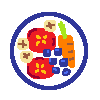
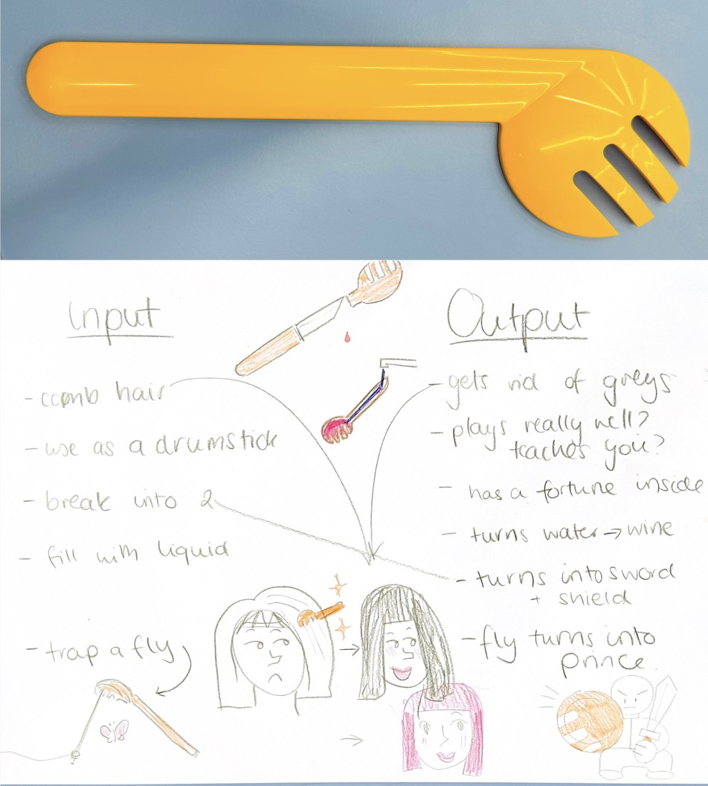
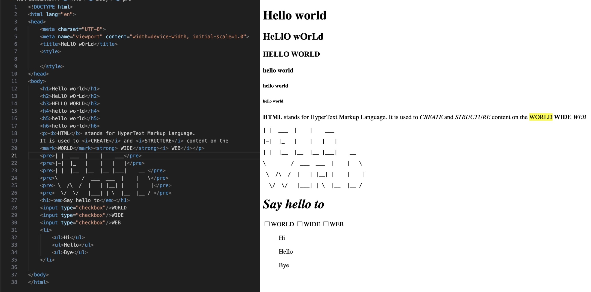
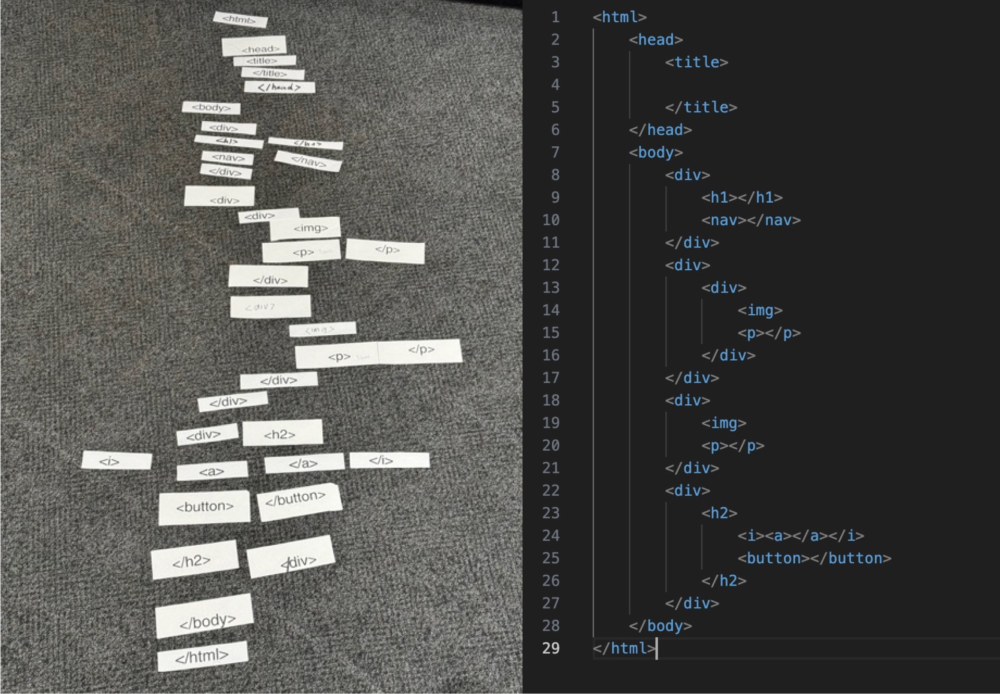

WEEKLY TAKEAWAY MENU
Week_01: RAW FOOD MENU

WHY RAW FOOD?
Week 1 is called as a Raw food menu as it frames the most essential componenents of web design: input and structure. This reflects the Raw food diet that we have to care about the input raw ingredients while keep it structural and balance in nutritions.
THIS WEEK MENU

ACTIVITY_01_GESTURE_GLOSSARY
Our team was given a bright yellow plastic salad spoon to freely sketchout our ideas of its potential input and output. I think this activity is an opportunity for me to think outside the box as the salad fork does not exist in Vietnamese cultures. As we tried different gestural interaction with the salad spoon: combing, drumming, pouring; I realise that innovations occurs from physical interaction of the users. Furthermore, we tend to make the object more functional such as a comb getting rid of grey hair or a magical drumstick making you play better, wihout considering it can be simply a decoration to satisfy human's aesthetic or challenge human's knowledge. We also see through the object by imgaing breaking it into shield and sword. This activity shifted my perspective from design for efficiency to designing for possibility.

ACTIVITY_03_HELLO_WORLD
I explore the visual hierarchy by experimenting with tags from h1 to h6. I realise that HTML is not just a Hyper Text Markup Language with structural skeleton but it is the basic understanding of other languages. I experiment the use of styling tags to create strong, bold, italic styles for text without .css or create the demo of button before heading to JavaScript. I think "Hello World" is not necessary to be typed down but can be drawn by "/", "\", "|" to explan my knowledge in spatial order of the html.

ACTIVITY_03_TAGS!
This teamwork games make me realise that I still mistake the idea of self-closing tags and the ideas of child and parent tags. Coding requires structures and absolute accuracy.